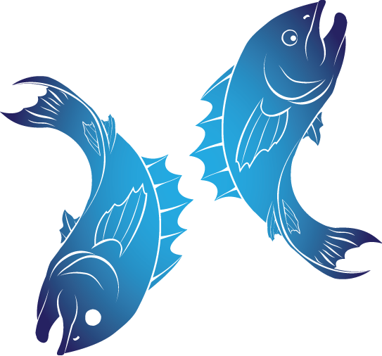

- Date Range : Feb 19 - Mar 20
- Element : Water
- Color : Seafoam green
- Quality : Mutable
- Day : Thursday
- Ruling planet : Neptune
- Ruling house : Twelfth
- Lucky number : 3,9,12,15,18,24
- Lucky gem : Turquoise
- Top love Matches : Virgo
PISCES (Feb 19 - Mar 20)

Pisces Personality Traits
Strengths : Compassionate, artistic, intuitive, gentle, wise, musical
Weaknesses : Fearful, overly trusting, sad, desire to escape reality, can be a victim or a martyr
Pisces likes : Being alone, love, sleeping, music, romance, swimming, spiritual themes
Pisces dislike : Know-it-all, being criticized, the past coming back to haunt, cruelty of any kind
Pisces is a very friendly sign, often finding themselves in the company of diverse people. They are selfless and always willing to help others, which is admirable as long as they don't expect too much in return.
Individuals born with their Sun in Pisces possess an intuitive
understanding of the life cycle, forming incredible emotional
relationships with others based on the natural order and their
senses. Pisces is a Water sign, which concludes the cycle of Cancer
and Scorpio, dispersing everything that happened in the past and
changing people's relative views on forgiveness. Pisces individuals
are characterized by empathy and incredible emotional capacity, but
only if they maintain strong boundaries and do not let external
emotions overwhelm them. The ruling planets of Pisces are Neptune
and Jupiter, and intuition is their strongest suit.
Pisces individuals are connected to art, music, and any form of
liberal expression, and every representative of this sign possesses
a talent they need to use to feel creative and free. While tolerant
and compassionate, they can sometimes do too much for others out of
good intentions, forgetting about their own wellbeing in the
process.
Pisces' Love Style
Pisces in love is passionate, intense, and singular. A relationship
with a Pisces is a roller-coaster ride that will make you feel your
feelings—even the bad ones—and help you emerge as a better, more
honest person. Even if a relationship with a Pisces doesn't last,
the lessons you learn from a Pisces partner will.
A Pisces will go all-in when it comes to romance, and expects their
partner to do the same. It's not as if a Pisces is clingy—on the
contrary, a Pisces can seem incredibly independent while in a
relationship—but a Pisces constantly views the world as if from a
split-screen: The world through their eyes, and the world through
their partner's eyes. They're always trying to make the choices that
are the best for both parties, and even small decisions, like where
to order Seamless, are made with that perspective in mind.
A Pisces wants their partner to grow, and demands that their partner
brings their very best self to the relationship. That may cause some
partners to feel like they're being pushed away, as a Pisces partner
will likely say of course they should seek a promotion, more time at
the gym, or a goal, even if it means spending time apart.
For Pisces, the physical, spiritual, and intellectual are deeply
intertwined, and in relationships, physicality is an important
manifestation of love. Pisces can be incredibly sensual when they're
feeling deeply in love, but isn't a sign that ever fakes anything.
Pisces demands full presence in a relationship, and is especially
hurt by any sort of deception. A Pisces demands full honesty and
gives the same in return.
Pisces' Friendship Style
A Pisces can feel like a great friend—until you consider how much you
actually know about them. While Pisces are natural therapists within
the Zodiac, they can be cagey about who they are, never revealing
their full selves until they trust you—and sometimes, they may never
reveal who they truly are. A Pisces can sometimes seem chilly and
reserved to acquaintances, and it may seem hard to pull them out of
their shell.
Pisces are loyal, but their ultimate loyalty is to themselves. They
will only give people in their lives so many chances, and they will
not sacrifice their health and well-being for that of someone else. A
Pisces makes their terms clear, and will always be who they are in a
friendship situation. This can be maddening—for example, a Pisces
won't play nice and head to a restaurant for another friend's birthday
dinner if she hates that restaurant or feels like she's been wronged
there—but remember: It's not personal.
Three reasons why Pisces make great friends
- They're so tapped into culture. Whether you need the next great designer, podcast everyone's going to be talking about, or new app, a Pisces has the best recommendations.
- They let you feel. How many times have you heard a friend say "it's going to be okay,"—when you're not sure if that's the case? A Pisces won't say that. Instead, they'll let you go to the depths of despair, staying by your side the whole time. In that, they can help you realize that the worst is never the worst when you have a friend by your side.
- They have a unique way of seeing the world. You'll never be bored hanging out with a Pisces. A Pisces can always come up with fun things to do—even if the two of you have zero dollars between the two of you. Even a Netflix session is made more interesting by the unique perspective Pisces brings to life.
Pisces are amazing! Their name says it all:
P for psychic
I for intelligent
S for surprising
C for creative
E for emotionally-driven
s for sensitive
Pisces’ career, money & success traits
Pisces' greatest career strength: Detachment. Pisces can care passionately about a project, but they also know that success and failure are temporary. Learning to let go, let things flow, and that nothing can be guaranteed can allow Pisces to change course mid-stream, try new avenues to success, and let go if a career doesn't seem to be working.
Pisces' greatest career challenge: Working in corporate-style "teams." Pisces tend to do their best work solo, and Pisces may resent corporate culture. One of the hardest things for a Pisces to learn is the chain of command; Pisces often wants to act because they believe it's right, not because a manager approves it. Having to wait for a corporate sign-off, or having to accept equal billing with corporate "team" members can be ongoing challenges for independent Pisces.
Pisces are intuitive and dreamy individuals who thrive in positions where their creative skills can be utilized or in jobs that involve working for a higher cause through creative charity events. Occupations that suit Pisces are compassionate, requiring faith and devotion. They often make excellent priests, doctors, veterinarians, musicians, painters and any career that involves working behind the scenes. They can have a lot of fun playing certain roles and hiding their true identity. Money is not usually a top priority for Pisces. They tend to focus on their dreams and goals and will only strive to earn enough money to achieve them. Depending on the power of their dreams and the sense of purpose they were raised to develop, each Pisces representative will spend as much as necessary to pursue their goals.
Motto
“Be who you are, not who the world wants you to be.”
Famous Pisces

Justin Bieber
(Singer)
March 1, 1994
Pisces
March 1, 1994
Pisces

Bruce Willis
(Actor)
March 19, 1955
Pisces
March 19, 1955
Pisces

Rihanna
(Singer)
Feb 20, 1988
Pisces
Feb 20, 1988
Pisces
Join Our Daily Overview
Your Astrological overview guides you on what to look out for and how to act in tune with the stars and planets each day.
Was this page helpful?
Do not selling My personal info!
© Copyright-2023 -All right reserved.